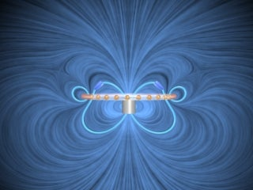

SUBJECT: The Falling Ring with Zero Resistance
DESCRIPTION: The animation shows the magnetic field configuration around a conducting non-magnetic ring as it falls under gravity in the magnetic field of a fixed permanent magnet. The current in the ring is indicated by the small moving spheres. In this case, the ring is heavy and has zero resistance, and falls past the magnet. The motions of the field lines are in the direction of the local Poynting flux vector.
VISUALIZATION (MPG - 4 MB)